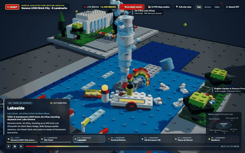
T1
LEGO city
PromptMake a motion graphic showing Geneva's Old Town, lakeside, central station, UN, Place de Neuve, and Bastions built from LEGO bricks. (original prompt in Korean)
Reasoning effort high · interactive run · 3 models
T3
Battle royale game
PromptBuild a PUBG-style battle royale game whose map is Geneva: the Old Town, the lakefront, Place de Neuve, and the Parc des Bastions. Do not ask questions. Make your own decisions and carry it through to the end.
Max reasoning effort · each model in its own fresh macOS VM · non-interactive CLI · one run, no fixes
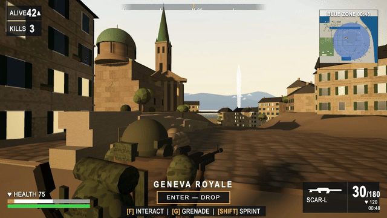
Muse Wonder Full
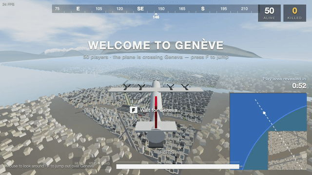
Claude Opus 5.5
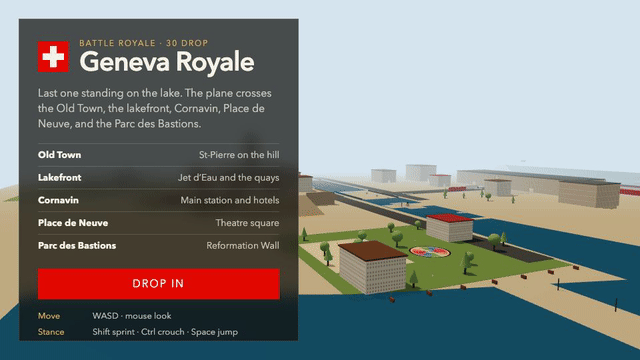
Grok 4.7 xhigh
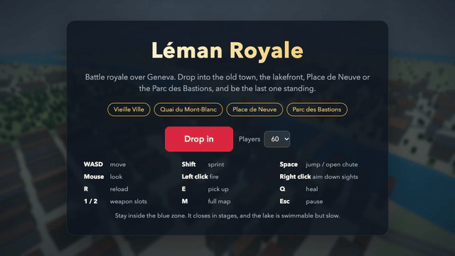
Claude Haiku 5.5
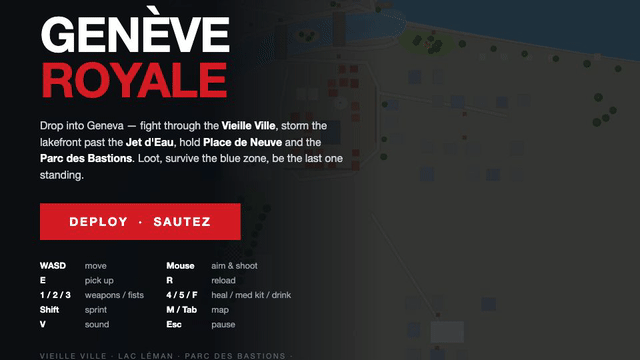
GLM 5.3 Flash
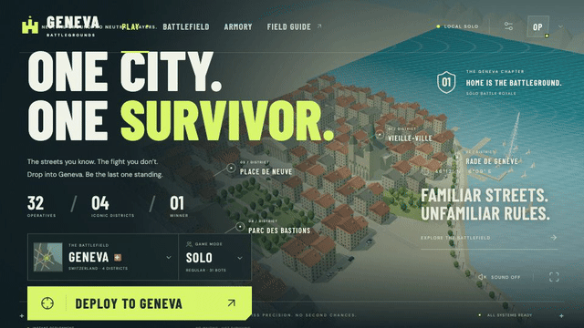
GPT-6.1 Sol
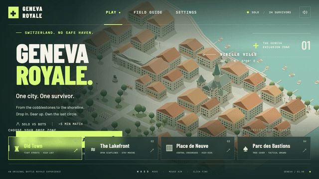
GPT-6 Astra
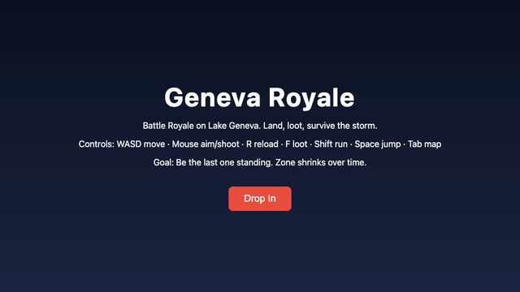
Beam
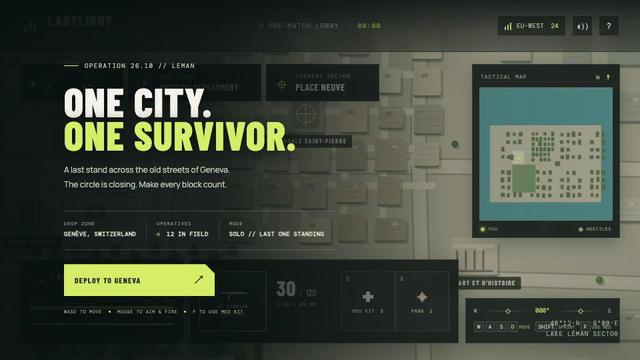
GPT-6 Luna
T4
LEGO Crazy Taxi
PromptBuild a LEGO-style Crazy Taxi game in Geneva: drive a LEGO taxi, pick up passengers and race them to Gare Cornavin, the Broken Chair, the Bains des Pâquis, the Pont du Mont-Blanc, the Jet d'Eau, the Jardin Anglais, Place Bel-Air, the Old Town, Place de Neuve, and the Parc des Bastions, laid out at their real relative positions and distances. Do not ask questions. Make your own decisions and carry it through to the end.
Max reasoning effort · each model in its own fresh macOS VM · non-interactive CLI · one run, no fixes
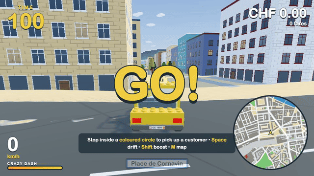
Claude Opus 5.5
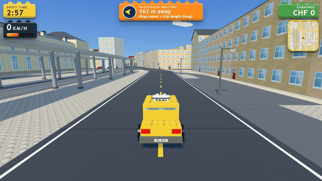
Claude Sonnet 5.5
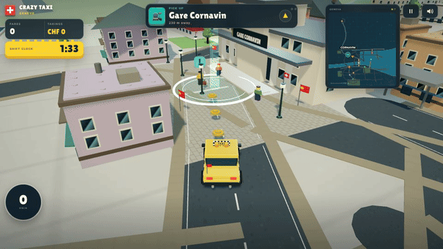
DeepSeek V4.1 Flash
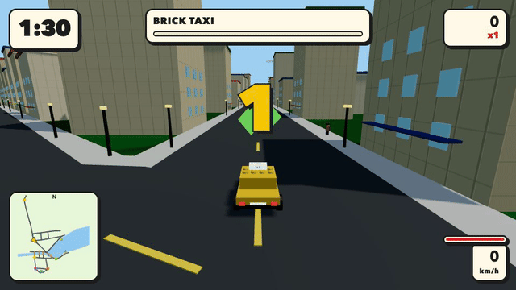
Grok 4.7 xhigh
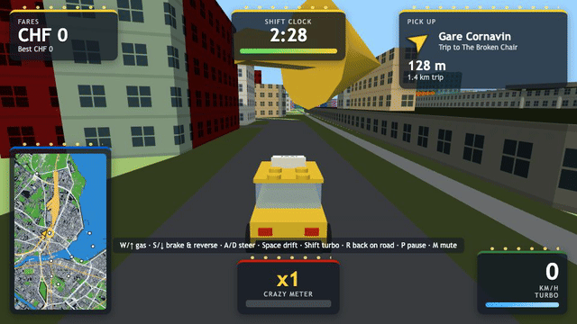
Claude Haiku 5.5
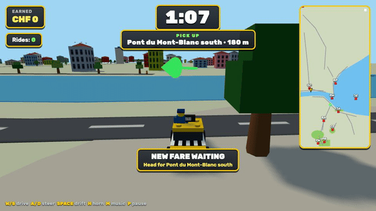
GLM 5.3 Flash
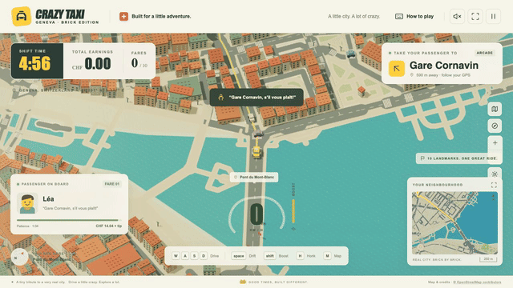
GPT-6.1 Sol
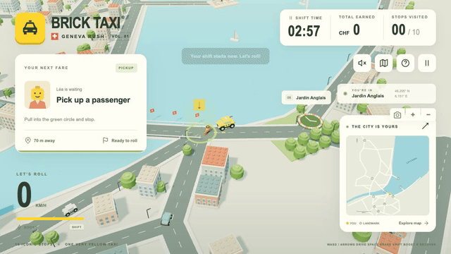
GPT-6 Astra
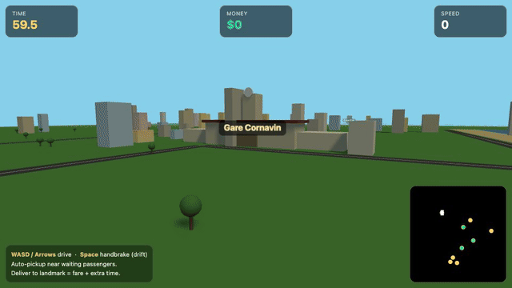
Beam
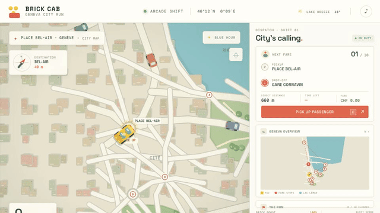
GPT-6 Luna
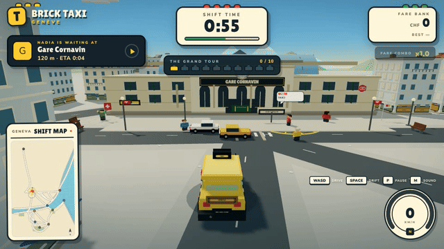
Mix B: DeepSeek V4.1 Flash lead + Claude Opus 5.5 helper
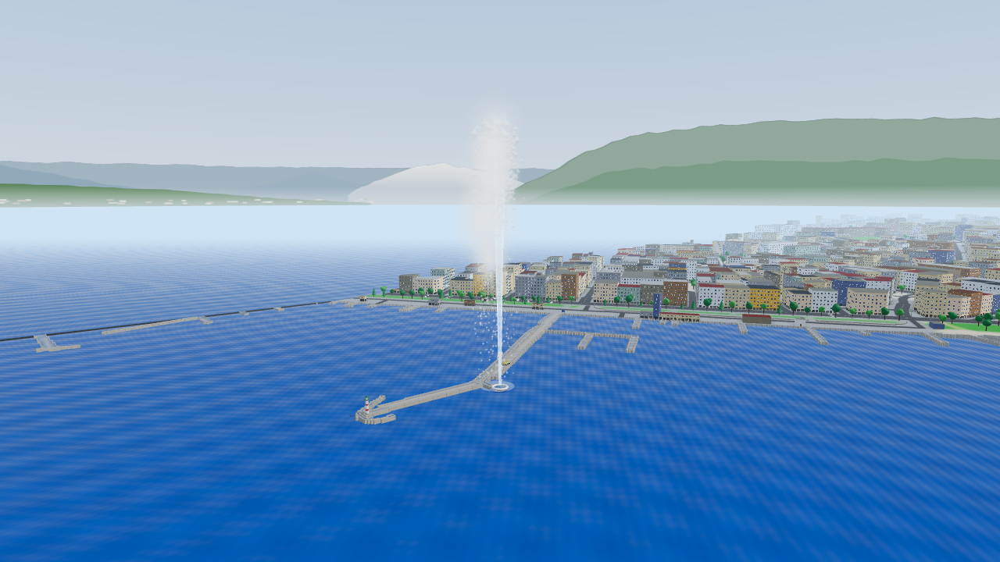
Mix A2: Claude Opus 5.5 lead + DeepSeek V4.1 Flash helper
T2
Drone flight
PromptMake a 3D video flying a drone view over Geneva's Old Town, lakeside, central station, UN, Place de Neuve, and Bastions. (original prompt in Korean)
Max reasoning effort per model · non-interactive run · finished models only
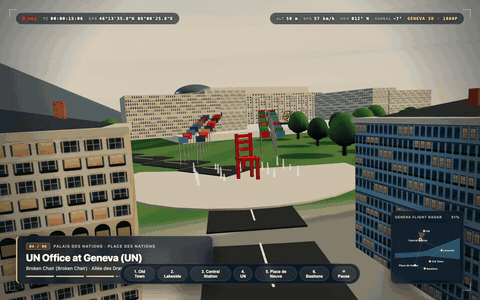
Gemini 4 Argon high
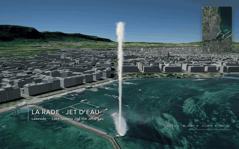
Claude Opus 5.5
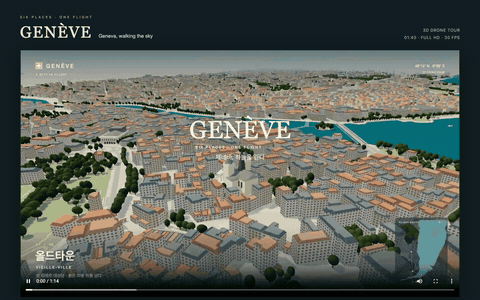
GPT-6 Astra xhigh
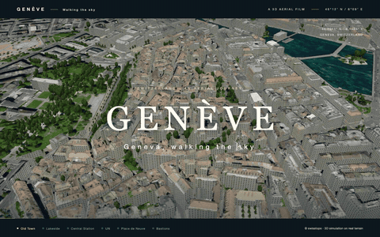
GPT-6.1 Sol xhigh
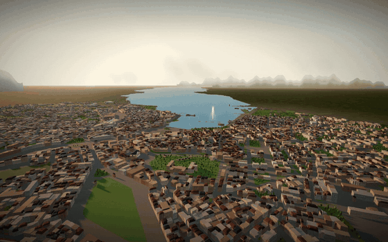
DeepSeek 4.1 Flash
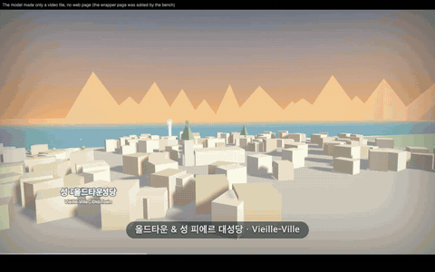
GLM 5.3
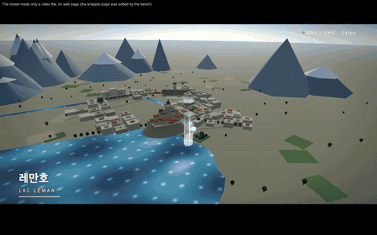
Qwen 3.8 Flash xhigh
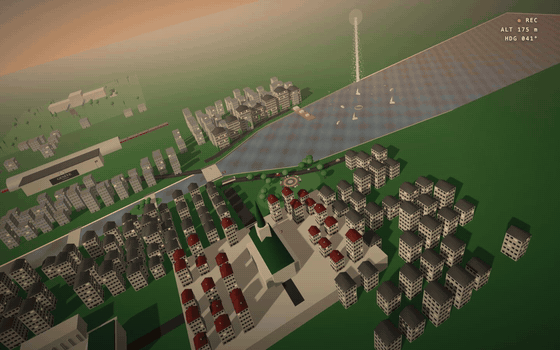
Grok 4.7 xhigh
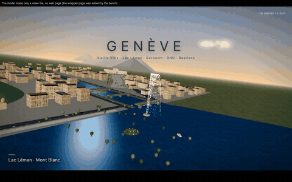
GLM 5.3 Flash
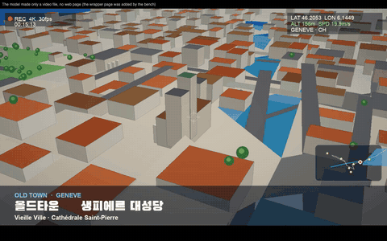
Muse Spark 1.3 xhigh
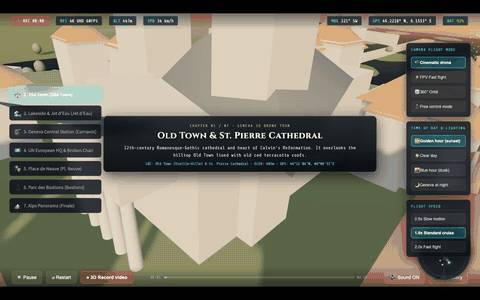